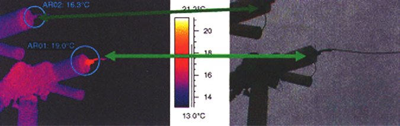
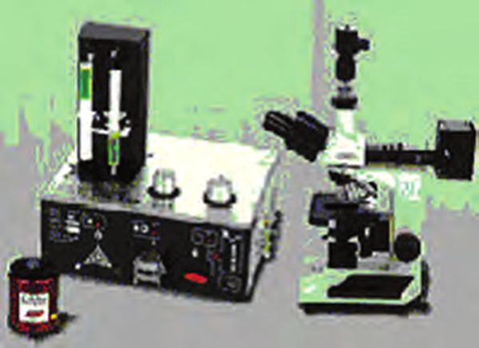
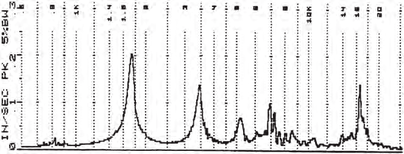
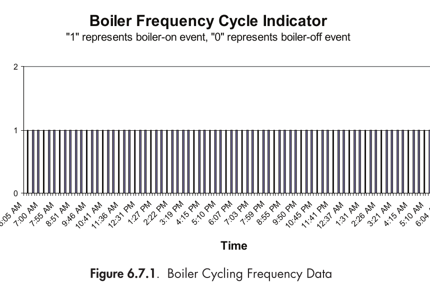
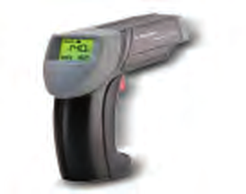
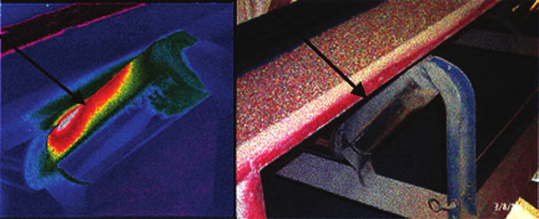
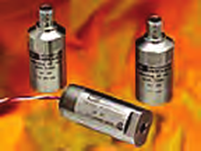
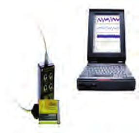

Mecanismo de degradacao
Processo fisico, quimico, eletrico ou operacional que reduz gradualmente a capacidade do ativo.
Resumo de aula: dos sinais fisicos da degradacao ate a decisao de intervir no momento certo.
A manutencao preditiva acompanha a condicao real do ativo para reconhecer o inicio de um mecanismo de degradacao. O objetivo e agir depois que o problema deixa sinais mensuraveis, mas antes que ele produza falha funcional, perda de seguranca ou parada cara.
Processo fisico, quimico, eletrico ou operacional que reduz gradualmente a capacidade do ativo.
Condicao detectavel que indica que a falha funcional esta a caminho. E a janela em que a preditiva trabalha.
Estado inferido por temperatura, vibracao, ruido, corrente, pressao, desempenho ou residuos de desgaste.
Grandeza cuja mudanca tem relacao util com a degradacao que se deseja acompanhar.
Retrato do comportamento normal do equipamento em condicoes operacionais conhecidas.
Sequencia de medicoes comparaveis ao longo do tempo. Uma leitura isolada raramente conta a historia inteira.
Regra que sinaliza desvio. Pode considerar limite absoluto, taxa de mudanca e comparacao entre componentes semelhantes.
Interpretacao das evidencias para identificar o defeito provavel e sua causa. Alarme nao e diagnostico.
Estimativa da evolucao futura da degradacao e, quando possivel, da vida util remanescente.
Combinacao de consequencias e probabilidade que define onde monitorar primeiro e quanto investir.
Mesma rota, ponto, instrumento e condicao operacional tornam medicoes sucessivas comparaveis.
O dado so gera valor quando altera uma decisao: inspecionar, lubrificar, alinhar, reparar, programar ou continuar operando.
Mede: radiacao infravermelha e padroes de temperatura.
Localiza aquecimento anormal e diferencas termicas sem contato.
Cuidado: emissividade, reflexos, distancia, carga e ambiente podem distorcer a leitura.

Mede: propriedades do lubrificante, contaminantes e metais de desgaste.
Responde a tres perguntas: o oleo ainda serve? o sistema foi contaminado? a maquina esta se desgastando?
Cuidado: amostrar sempre em ponto representativo, preferencialmente ativo e antes da filtragem.

Mede: energia acustica em frequencias acima da audicao humana.
Detecta fenomenos que produzem turbulencia, atrito ou descarga eletrica.
Cuidado: a interpretacao depende do caminho do som, ruido de fundo e acesso ao componente.
Mede: deslocamento, velocidade ou aceleracao vibratoria.
O espectro de frequencias ajuda a separar fontes que se misturam no sinal global.
Cuidado: ponto, direcao, rotacao, carga e montagem do sensor precisam ser controlados.

Mede: resposta eletrica do enrolamento e assinatura de corrente.
Complementa termografia e vibracao na avaliacao do conjunto motor-carga.
Cuidado: tecnicas especializadas exigem treinamento e referencia historica.
Mede: variaveis de processo e eficiencia ja disponiveis na instalacao.
Transforma instrumentos comuns em fontes de informacao sobre saude e desempenho.
Cuidado: registrar dado sem finalidade apenas cria um arquivo muito organizado de coisas inuteis.





| Sensor / instrumento | Variavel observada | Exemplos de indicios | Ativos tipicos |
|---|---|---|---|
| Camera termica / pirômetro IR | Temperatura superficial e padrao termico | Resistencia eletrica, atrito, perda de isolamento, fluxo anormal | Paineis, motores, rolamentos, fornos, telhados |
| Acelerometro piezoeletrico ou MEMS | Aceleracao e frequencias de vibracao | Desbalanceamento, desalinhamento, folga, rolamento, engrenagem | Bombas, ventiladores, redutores, motores |
| Sensor ultrassonico / detector acustico | Ultrassom aereo ou estrutural | Vazamento, turbulencia, descarga eletrica, atrito | Ar comprimido, vapor, valvulas, rolamentos, subestacoes |
| Transformador de corrente / alicate / analisador | Corrente e componentes de frequencia | Barras quebradas, excentricidade, variacao de carga, falha eletrica | Motores e cargas acionadas |
| RTD, termopar ou sensor de contato | Temperatura pontual | Sobreaquecimento e degradacao termica | Mancais, processos, trocadores, fornos |
| Transdutor de pressao / pressao diferencial | Pressao e perda de carga | Filtro saturado, obstrucao, cavitacao, perda de desempenho | Filtros, bombas, HVAC, hidraulica |
| Medidor de vazao | Vazao de fluido | Restricao, vazamento, desgaste e operacao fora do ponto | Bombas, redes, trocadores, compressores |
| Laboratorio / sensor de oleo | Viscosidade, agua, particulas, elementos | Contaminacao, degradacao do oleo e desgaste interno | Motores, turbinas, redutores, sistemas hidraulicos |
| Data logger / PLC / sistema supervisório | Series temporais de processo | Deriva, ciclos excessivos, queda de eficiencia, anomalias operacionais | Caldeiras, HVAC, linhas e utilidades |
O principio fisico permanece o mesmo; mudou a escala de coleta, comunicacao e analise. Sensores menores e conectados permitem monitoramento continuo, mas nao aposentam o conhecimento de engenharia.
Mais pontos e frequencia de coleta; alertas automaticos; fusao de sinais; acompanhamento remoto; correlacao com carga, producao e ambiente; integracao com ordens de servico.
Sensor mal instalado, dado sem contexto, cadastro ruim, alarme sem responsavel, modelo sem validacao e manutencao sem capacidade de resposta continuam produzindo falhas — agora com dashboard colorido.
| Estrategia | Gatilho | Pergunta principal | Risco tipico |
|---|---|---|---|
| Preventiva sistematica | Tempo, calendario ou uso | Chegou o intervalo? | Intervir cedo demais ou tarde demais |
| Baseada em condicao | Desvio observado | A condicao exige acao? | Medir algo que nao representa o modo de falha |
| Preditiva / prognostica | Tendencia e estimativa de evolucao | Quando a intervencao sera necessaria? | Confundir previsao estatistica com certeza |
A anomalia indica que o comportamento se desviou do esperado. O diagnostico interpreta evidencias para apontar o defeito e sua causa provavel.
Porque carga, velocidade, ambiente e operacao alteram o sinal. A tendencia sob condicoes comparaveis oferece evidencia mais forte.
Condicao do lubrificante, contaminacao/integridade do sistema e desgaste da maquina.
Vazamentos e turbulencia, defeitos iniciais de rolamentos/lubrificacao e descargas eletricas como corona, arco ou tracking.
Porque diferentes componentes e mecanismos geram frequencias caracteristicas; o espectro ajuda a separar fontes misturadas no sinal.
O motor atua como transdutor: variacoes mecanicas de torque e carga modulam a corrente eletrica, produzindo componentes analisaveis.
Frequentemente reutiliza instrumentacao e dados ja existentes, permitindo detectar perda de eficiencia e necessidade de manutencao com baixo investimento adicional.
Porque define onde a falha importa e direciona recursos para ativos cujo risco justifica monitoramento e resposta.
Um motor com aquecimento pode ser avaliado por termografia, vibracao e corrente; juntas, as tecnicas ajudam a separar problema eletrico, rolamento, desalinhamento ou sobrecarga.
Ponto, direcao, metodo de montagem, instrumento, configuracao e condicao operacional padronizados.
Tratar a aquisicao do sensor como fim. Sem processo de analise, responsabilidade, ordem de servico e verificacao do reparo, o dado nao gera valor.
Quando ha poucos ativos, uso esporadico, alto custo do instrumento ou falta de especialistas internos. A decisao deve considerar criticidade, frequencia e custo total.
Manutencao preditiva e a disciplina de transformar sinais fisicos da degradacao em intervencoes tecnicamente justificadas e economicamente oportunas.